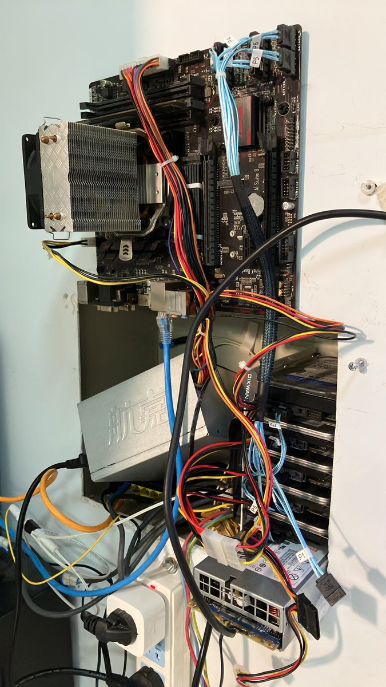

夜桜侵雪～
@Minecraftxfj
根本就没有便宜的多 SATA 口的还能装飞牛的 Arm 设备你知道吗🙏；
我感觉我还是太富有了，自己都用的寨板然后给 NAS 上华硕（）就是买完板子预算花完了用了颗 G4600🌚；
英特尔搞 12VOnly 标准都不知道几年了也没推起来……•ᴗ•💧；
现在纠结就是开 NAS 电源风扇坏了太吵我睡不着觉，我又没多余的风扇换，有个 DC-ATX 的模块但是带不起来五块硬盘；
不开 NAS 的话所有服务就全挂了……
无解了这把😭😭😭
ps.都怪这个 DC-ATX 模块，以前是六块 500G 大矿盘的，他给我干烧了一个呜呜呜（现在的文件系统还是只读状态）😭😭😭
